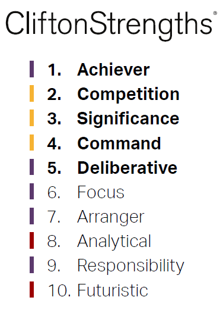

From talking with a few friends, family members, family friends and even with self reflection there are a handful of core personal values that I hold. They are:
High integrity
Hard work ethic
Discipline
Positivity
These were taught to me from a young age by both of my parents. My Father held a moral high ground which not only I respected him for, many other people in the community did as well.
My Grandfather on my Mother's side was a Major in the United Nations and my Grandfather on my Father's side was a Professor of Economics at Canterbury University, so it seemed natural
for me to try and uphold the same values as what they did growing up.

At the beginning of this year I lost my father in an accident. It was the biggest hit in the guts for me. He was my best friend and from what I have wrote above you can probably tell that I looked up
to him as my main role model. At his funeral I wrote and presented a speech. In this speech I reflected on a lot of the values that he had, he taught me and I vowed to instill into myself.
Here is the part of the speech I did (with a little bit of editing to make the context more relevant to this blog) which reflects on this:
To respect every single person
To say hello, or going morning (or whatever the case may be) to everyone you see, even if they were to ignore you each time you said that to them. To continue
to say it each day even if they didn’t reciprocate as a sign of respect.
To work hard to achieve results
Hard work was built into my fathers DNA. That’s how I see it. He made it very clear that results do not come easy and
led the way to show this in his professional
career and work around the house especially.
That discipline is important
My father earned a black belt in the martial arts ‘Aikido’. He always said that he took that up as a form of discipline which helped him to stick to the
goals he wanted to achieve. He most definitely achieved his goals.
To be a positive person
Dads attitude towards life was amazing. His ability to keep a positive and strong willed attitude when times were tough, dark or negative was the full extend of the word
'phenomenal'. He especially for me was a shining light of hope and comfort in the most darkest days. It made a huge difference for me to form a far more positive and healthier mindset than what I
had been years back.
These were some of the values that helped my father be successful in his academic career, with his interests and as a father.
These are the values I uphold to achieve like he did.
These values make up what I personally feel is one of the most important traits (especially in 2019) which is having high integrity. An easy example of why this value is important is how technology has
changed how we live our lives. Technology and social media have made it very easy to connect with people where you can have a conversation, share photos/videos or do activities like playing games
with people all over the world. Having a voice with a conscious doesn't mean that you're going to use both correctly or positively. When used negatively it can cause a lot of harm to the people targeted.
This also translates to everyday interactions with people, groups or workmates where 'doing the right thing' or 'being respectable' can create more positive experiences and outcomes.
That's a world I would like to live in so that's how I represent myself.
This was represented everyday in my previous job in sales. In a competitive team where we were together as a team 'unit' to achieve store goals, we had personal goals and targets as well as the
better salesperson you were, the more money you made. That was a big incentive for some people, myself included.
With such a competitive environment the potential to steal sales can be a high threat. People could finish closing sales on your days off, when you're on a break or when you're not looking to
gain the advantage in their favor and not yours.
This surprisingly could be very common on a sales floor. I vowed to give respect where respect was due at any time I knew a sale wasn't mine.
Any time the customer came in saying they had been dealing with 'X' person or I had seen them dealing with 'X' person, I looked to make sure that person got the credit due. Even if I saw another
team mate look to close it and they knowingly knew, I gave them a soft reminder on who the customer was dealing with. "Hey man, you know that 'X' was talking to them the other day? Yeah, they
came in on Sunday and said they could only make it in on Tuesday which obviously is his day off. He spent a lot of time selling to them".
From this I actually gained respect and trust from my work mates and from when I started or what I heard from other teams we had less 'poaching' happening in our team than in others.
A great example to why positive values are important.
Personal Strengths and Limitations
After the death of my Father I got some counselling to help get some clarity and support with the situation and what was happening in life. I wanted to push forward with my career, although lacked a
lot of clarity on to what I should be doing. My councillor recommended to do a Clifton's Strengths report which identify 34 of your traits and list your strongest to your weakest. From the results of
that report, the top strengths and limitations for my learning and career development are:

Strengths:
Achiever
Deliberative
Focused
Analytical
Limitations:
Empathy
Includer
Achiever: I take pride in being busy and productive with my time and look to maximize the time I use to the best use. I also take immense satisfaction in achieving the goals I have set.
Deliberative: When I make decisions I always take care when making a final one, especially if the decision is a significant one. I try to anticipate obstacles as best as possible to
achieve the best outcome.
Focused: Keeping focused means that I can take a direction, follow through and make the corrections necessary to stay on track. I prioritise, then act. If I keep focused within the
course I will be able to overcome any learning obstacles I may have.
Analytical: I think about all of the factors that might affect a situation to be prepared by searching for reasons and causes.
Empathy: Something I can lack in. Generally being someone who tries to rely on myself to get something done. A trait I will build more on within the bootcamp.
Includer: When there's a task to be done and someone is falling well behind I have generally attempted to pick up the extra work rather to carry than including them with tasks to help finish.
With my previous job I had all these strengths and weaknesses shine through each and every day. I would be tested constantly with the environment I was in. As I stated before with the job,
everyone wanted to make money. Some people wanted to work for it, others wanted to put in minimal effort, but still "take home the chocolates" if an easy situation to get them were to arise.
Not only was it a sales/customer service role, we had plenty of cleaning tasks, rotating ticket prices and other various jobs. A few people in the team were very lazy. Some of them would
ignore customers, ignore jobs, basically give minimal effort almost every day they worked. Very little was done at a higher level about it, because I and a couple of other team members would
pick up the work instead.
This used to frustrate me.
They had the same role as me (sometimes higher) and they just didn't care. At first I tried to be empathetic with them and try to include them,
although they still wouldn't care. From there I couldn't rely on them at all and just looked to get the work done by myself or with the very few others. This has probably developed my limitations
of my traits!
From now I would only be involved in a team or group where everyone is included and everyone works hard to achieve results. A team that has good time mangement, is focused and professional. If I do get find myself in a negative
environment again I would look to keep working hard while within the group while trying to include everyone as much as possible, although I will look for other opportunities to where I feel
more of a team fit and that my time would be far more appreciated and reciprocated appropriately.